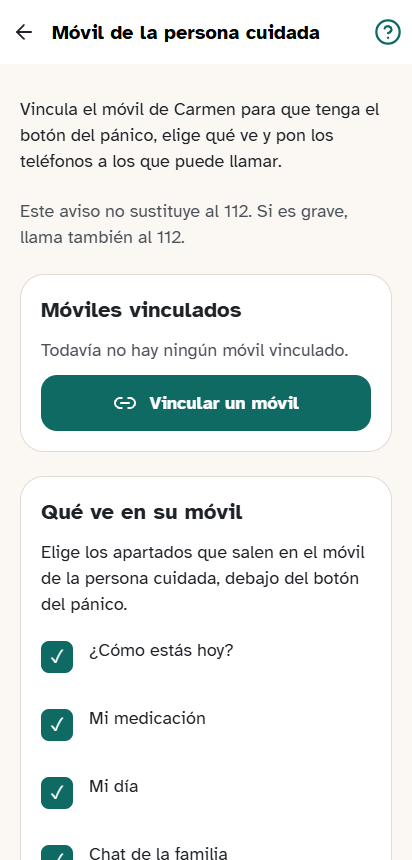

Emergencias
El botón para pedir ayuda desde el móvil de la persona cuidada.

Cómo funciona
✦ Premium
La persona cuidada tiene en su móvil un botón grande para pedir ayuda. Al pulsarlo, tras 5 segundos para cancelarlo, os llega un aviso urgente con su ubicación si la comparte.
No sustituye al 112: ante una urgencia grave, llamad al 112.
Prepararlo
✦ Premium · Solo para: coordinación
En la casilla con su nombre («Móvil de Carmen», por ejemplo), pulsa «Vincular un móvil» y escanea el código con el móvil de la persona cuidada. Elige qué ve en su pantalla y añade hasta 3 contactos de emergencia.
Si llega un aviso
✦ Premium
Pulsa «Voy yo» para que los demás y la persona cuidada sepan que vas. Si nadie va, el aviso se repite. Al terminar, pulsa «Ya está atendido».
En tu perfil decides si quieres recibir estos avisos.
Detección de caídas
✦ Premium · Solo en el móvil
Con premium, la coordinación puede activar en «Móvil de la persona cuidada» que su móvil (Android) note las caídas.
Si nota una, el móvil suena y pregunta en voz alta «¿Estás bien?». Si nadie contesta en 30 segundos, llega el aviso de emergencia como «Posible caída».
Aunque el móvil esté bloqueado, la pantalla se enciende con «Estoy bien» y «Pedir ayuda» bien grandes, sin desbloquearlo. Si el inicio pide un permiso para eso, hay que darlo. Después de avisar, deja de vigilar 2 minutos.
Solo funciona si lleva el móvil encima y no detecta todas las caídas. No sustituye a la teleasistencia ni al 112.
En iPhone no se puede: Apple no deja que una app vigile los movimientos con la pantalla apagada. Si hay un Apple Watch, él detecta las caídas por su cuenta (en la app Watch del iPhone, «SOS de emergencia» → «Detección de caídas»).
¿Aún no usas Tutelia?
Es gratis para organizar el día a día entre varias personas. Así se empieza.